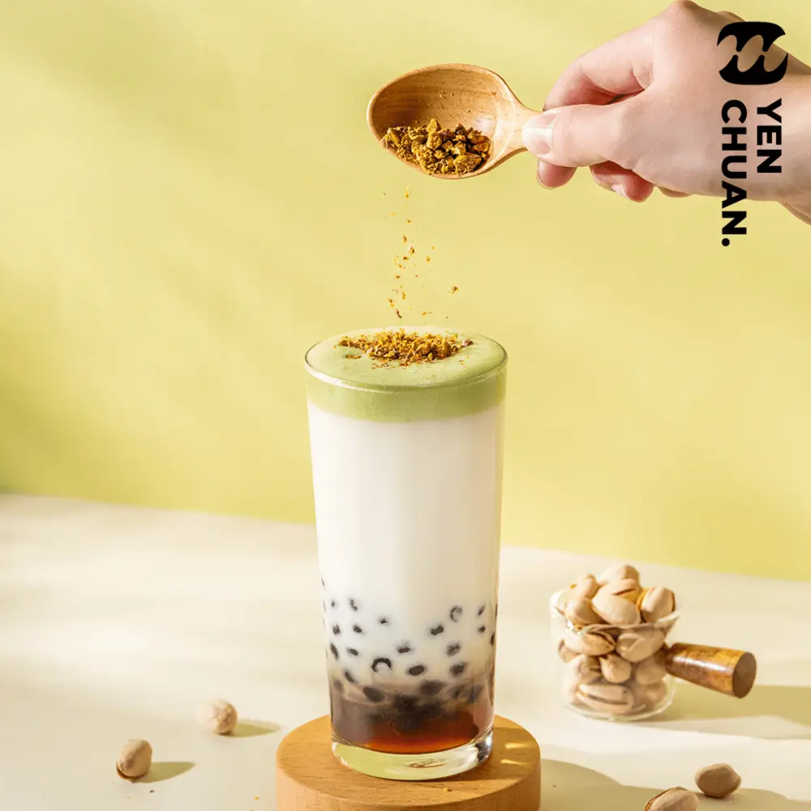
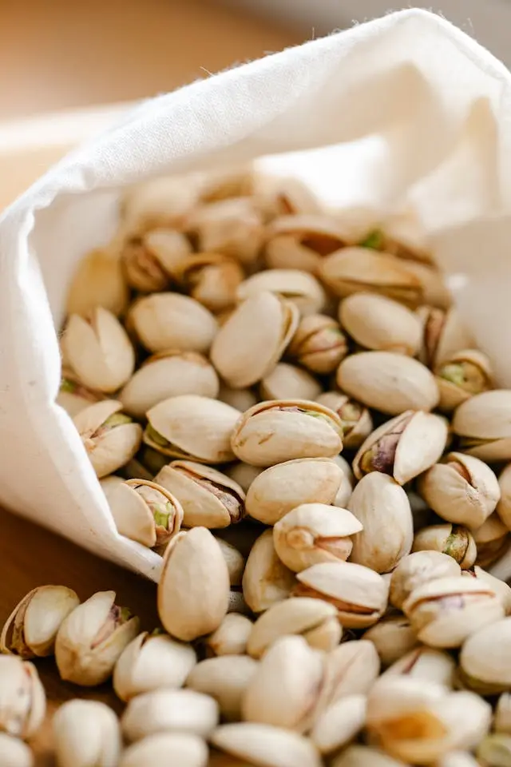
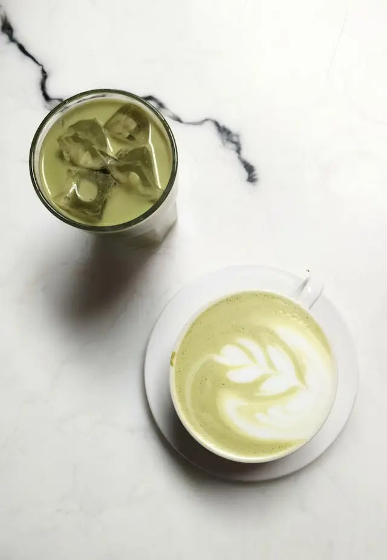
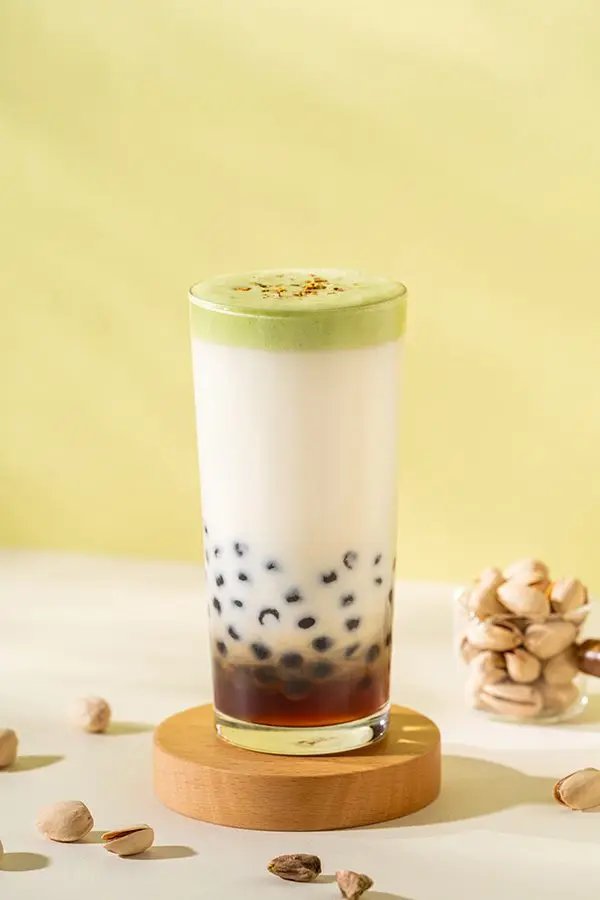

Articles / Recipes
Savoury and delicious, it’s pistachio cream top!
2025-03-18 · Recipes, Recipes

Original public content from Yen Chuan. Product claims and specifications remain subject to confirmation by the company.
Can’t get enough of that pistachio fix? Stave off those cravings with our pistachio cream top!

Pistachio cream top?
Cream tops are a classic in any bubble tea worth their salt, and it’s a great way to introduce pistachio to your menu!
The salty, roasted-nut taste from the pistachio blends with cream top’s rich sweetness, creating a robust flavour profile. Meanwhile, the creamy, foamy texture makes enjoying it oh so satisfying!
What’s more, the cream top’s light green hue adds a dash of colour, while being soothing to the eyes!
How do you use it?
Much like other cream tops, feel free to pair it with teas, milk and other drinks!
Here, we have a playful twist on the classic pistachio latte! While the usual way of making this brew would be to add a dash of syrup to your latte, here we use pistachio cream top instead. The result? A delightfully layered drink, in both sights and taste!
First, take a sip of the cream top, taking in the savoury, buttery flavours. Then, take a larger sip to let the fresh milk mingle with the cream top.
Next, use a boba straw to slurp up the tapioca underneath, with a dash of expresso to boot! Finally, mix them all together and enjoy!


Pistachio cream top latte
A bubble tea-inspired take of the classic Starbucks blend, enjoy this layered drink with a dash of boba!
What you’ll need
How to make
Blend 25g cream top powder with 100ml cold water to form a foam. Set aside.
Pour the expresso into a clear cup/glass, then add the tapioca pearls. Add the ice cubes, then pour in the milk (taking care not to disturb the bottom layer)
Pour the foam from step 1 on top. Enjoy!
For best results, add some grated pistachio on top!
Get started!
Want to learn more about our latest products, or have ideas of your own? Get in touch with us and let us know what you think!